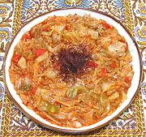

|
Chicken with CabbageTurkey - Kapuska | ||||
| Serves: Effort: Sched: DoAhead: |
4 main ** 1-3/4 hrs Prep |
A delicious stew that's very easy to make, with very little frying to be done. It will be much liked by people who like cabbage, but will also be fine for people who think they don't. | |||
|
1 1-1/4 7 8 2 2 1-1/2 3 1 1 1-1/2 2/3 1/3 |
# # oz oz T T c T T t T t t |
Chicken Meat (1) Cabbage, white Tomato Bell Pepper, red Olive Oil, ExtV Butter Water Rice, white Red Pepper Paste (2) Chili Flake (4) Lemon Juice Salt Pepper, black |
Prep - (40 min)
|